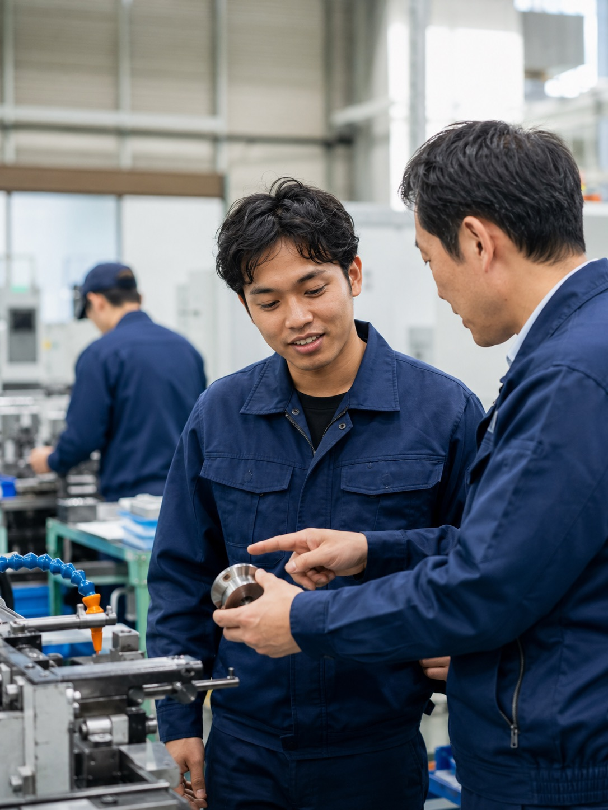
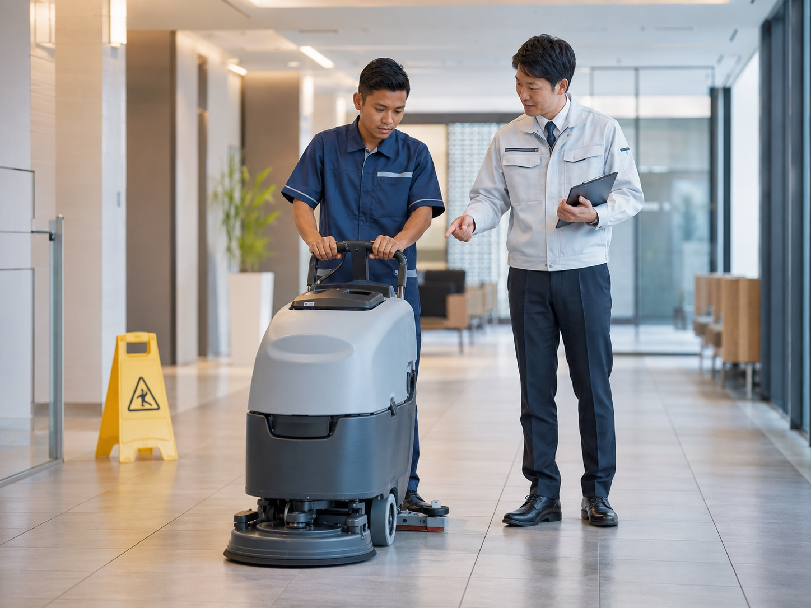

→
介護
高齢者施設などで身体介護や生活支援を行う分野。訪問系サービスにも対応が広がっています。
特定技能外国人の人材紹介、面接調整、入社準備、生活支援、入社後の定着まで、企業ごとの状況に合わせてサポートします。はじめての外国人採用も、一つの窓口で一貫してお手伝いします。


▶ クリックすると、この場で動画を再生します
さまざまな分野で外国人材が活躍しています

株式会社ヒトキワ｜〒102-0083 東京都千代田区麹町4丁目3-5 7階｜TEL：03-6842-0293
人材の紹介から面接調整、在留資格手続きのご案内、入社準備、生活支援、入社後の定着まで。ヒトキワの支援内容をまとめてご紹介します。

▶ クリックすると、この場で動画を再生します
人材の募集・紹介から、在留資格手続きのご案内、生活面のサポート、入社後の定期的な支援まで。企業ごとの体制や状況に合わせて、必要な範囲でご利用いただけます。
「何から始めればいいか分からない」段階からご相談いただけます。募集・紹介から在留資格手続きのご案内、生活支援、入社後のフォローまで、窓口を分けずに進められるので、はじめての受入れでも安心です。
各分野の要件に合った特定技能外国人材を募集し、ご要望に沿った人材をご紹介します。
面接の日程調整から、雇用条件の確認・すり合わせまでをサポートし、双方の納得を大切にします。
在留資格に関する手続きや、企業側で準備が必要な書類について、わかりやすくご案内します。
入社に向けた準備や住まいの確保、生活面のサポートなど、安心して働き始められる環境づくりを支援します。
入社後も定期的に状況を確認し、外国人材と企業の双方が長く安心して働ける関係づくりを継続して支援します。
受入れにあたって企業側で必要となる書類の準備について、内容や進め方を整理してサポートします。
外国人材の受入れがはじめての企業でも、登録支援機関への委託を含め、状況に合わせてご提案します。
受入れの規模や条件によって必要な支援は異なります。自社の状況に合わせて必要な範囲をご相談ください。
募集をかけても人材が確保できず、現場の人手が足りない。採用の選択肢を広げたいと考えている。
何から始めればよいか、どんな準備が必要か分からず、最初の一歩を踏み出せていない。
制度や在留資格、提出書類が複雑で、自社だけで正しく進められるか不安がある。
採用できても、住まいや生活のサポート、長く働いてもらうための支援に自信が持てない。
ヒトキワは、採用から入社後の定着までを一つの窓口でサポートします。
人材の紹介と入社後の支援を、一つの窓口でご相談いただけます。複数の事業者とのやり取りに悩むことなく、採用から定着までを通して進められます。
在留資格や必要書類など、わかりづらい制度面についても、企業の状況に合わせて整理してご案内します。はじめての受入れでも、不安を一つずつ解消しながら進められます。
採用して終わりではなく、入社後も定期的に状況を確認します。外国人材と企業の双方が安心して働き続けられる関係づくりを大切にしています。
各分野の業務内容や受入条件は、詳細ページで詳しくご確認いただけます。カードをクリックすると各分野のページに移動します。
「どの分野で受け入れられるか分からない」段階でも問題ありません。状況をお聞かせいただければ、最適な進め方をご提案します。
はじめての方にもわかりやすいよう、段階を追って進めます。各ステップで丁寧にご説明します。
電話またはフォームからご相談ください。採用したい分野や人数、勤務条件などをお伺いし、受入れの方針を整理します。
ご要望に合った特定技能外国人材を募集・選定し、ご紹介します。経歴や希望などを確認しながら進めます。
面接の日程を調整し、双方が納得できるようサポートします。雇用契約の内容や労働条件を確認し、合意します。
在留資格に関する手続きのご案内や、住まい・生活面を含む入社に向けた準備を進めます。
安心して勤務を開始できるようサポートし、入社後も定期的に状況を確認して定着に向けて継続的に支援します。
技人国ビザが厳格化された今、採用できる人材の幅を狭めないための体制づくりを支援するサービスです。2026年4月15日から、カテゴリー3・4の企業は対人業務の申請でN2相当の言語能力証明が必要となりました。「カテル」は、御社の申請体制をカテゴリー2相当に引き上げ、この追加要件の対象から外れる仕組みをつくります。
カテルのページを見る分野を問わず共通してよくいただくご質問をまとめました。分野ごとの詳しいご質問は、各分野の詳細ページをご覧ください。
「何から始めればいいか分からない」段階でも問題ありません。自社に合った進め方を一緒に整理します。ご相談・お見積りは無料です。
お電話でのご相談 03-6842-0293